section in PDF
manual in PDF


|
|
|
| |
| Get this section in PDF |
Get entire manual in PDF |
|
Chapter 3: De-registering Licenses
Introduction
A license, once installed, is said to be node-locked to the Ixia chassis or workstation (including a License Server) specified during the installation process. It may only be used on that particular chassis or workstation.
A license can be de-registered, including all of its features, at any time.
If a license needs to be split up and some of its features moved to another chassis or workstation, then Ixia's assistance is required. The process involves:
- De-registering the license – this removes the license from its current chassis/workstation. This is covered in Online License De-registration – Step by Step on page 3-3 or Offline License De-registration – Step by Step on page 3-10.
- Contact Ixia at the appropriate support center or registrations@ixiacom.com and ask to split the license, or have several licenses recombined. Ixia will cancel the previous license(s) and issue new ones.
- Installing the license(s) – as in the initial license installation. This is covered in Chapter 2, Registering Licenses.
Before starting the de-registration process, make sure that the following information is available:
An example of the Ixia registration e-mail is shown below, with the Registration number and Password underlined:
Dear Customer, This release of IXVPN uses software licensing. Ixia software licenses are backward compatible, which means that the registration number and password below will work with any prior release of the application that included Ixia software licensing. Please find the necessary information to download the application, and to keep your product up-to-date and under maintenance. Contact your authorized Ixia Representative should you have any questions. License Key Information When you first start IXVPN, you will need to register your IXVPN license. When connected to the Internet, you can directly register your copy of IXVPN by simply running the IRU utility provided by Ixia. For offline registration,the IRU will guide you through the registration process. You will need to use a web browser on a machine connected to the internet. Please make sure to record the registration number and password shown below. Product: IXVPN Features: * IxVPN, Software Option, Advanced Protocol * IxVPN, IPSec Test Application * Juniper custom IKE for IxVPN * Manual IKE for IxVPN Version: 3.00 Registration Number: 500008392NC Password: yqXcih ...For an example of the entire text of the e-mail, see Chapter 2, Registering Licenses.
Online License De-registration – Step by Step
An online de-registration is performed if the Installation Host is connected to the Internet (and to the lab network as well). The steps in the online de-registration process are:
License de-registration is initiated by running the IRU utility.
Make sure the network connectivity requirements discussed in Installation Scenarios are reviewed and understood.
If the Installation Host is not attached to the Internet, then follow the instructions in Offline License De-registration – Step by Step.
Figure 3-1 will help keep track of the steps in the online de-registration process. It is repeated at each step with the current operation highlighted.
Figure 3-1. Online De-registration
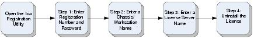
Open the Ixia Registration Utility
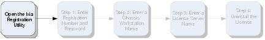
To open the IRU, select Start > Programs > Ixia > Licensing > IRU from the Start menu. When the IRU is opened, the screen shown in Figure 3-2 is displayed. This is the main IRU screen that allows the user to select various registration operations.
Figure 3-2. Ixia Registration Utility Main Dialog
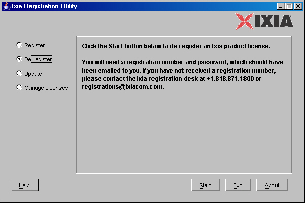
- Registration – Chapter 2, Registering Licenses.
- Update – Chapter 4, Updating Licenses.
- Manage Licenses – Chapter 6, Managing Licenses.
Step 1: Enter Registration Number and Password
The first screen displayed is shown in Figure 3-3. If the Installation Host is not attached to the Internet, the screen shown in Figure 3-9 is displayed. Follow the instructions in Offline License De-registration – Step by Step.
Figure 3-3. De-registration Step 1 – Registration Number
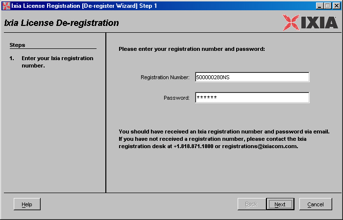
- Enter the Registration Number and Password, as specified in the Ixia generated e-mail. The source and contents of this e-mail are discussed in Introduction and in What is License Management?.
- Press the Next button.
Step 2: Enter a Chassis or Workstation Name
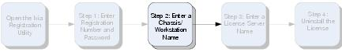
If the license is associated with a different chassis/workstation, then the screen shown in Figure 3-4 is displayed. The registration number entered in the previous step internally specifies whether the license applies to an Ixia chassis or workstation. The text within the dialog will include the words Ixia Chassis or workstation as appropriate.
Figure 3-4. De-registration Step 2 – Ixia Chassis or Workstation Name
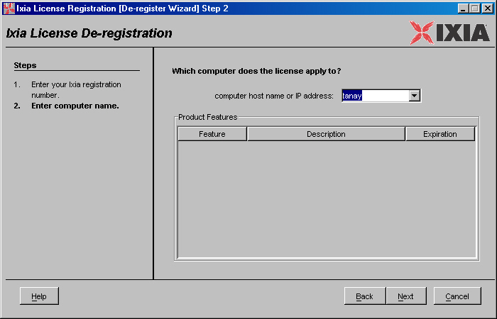
- Enter the host name or IP address of the Ixia chassis or workstation that is is associated with the license being de-registered. Localhost is the default and refers to the Installation Host.
- Look at the Product Features box and verify that the features listed correspond to the license being de-registered.
- Press the Next button.
Step 3: Enter License Server Name
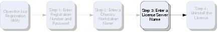
The dialog shown in Figure 3-5 is displayed. The above screen should only appear if a License Server is used (and the chassis or workstation entered in Step 2: Enter a Chassis or Workstation Name did not contain the license being de-registered).
Figure 3-5. De-registration Step 3 – License Server
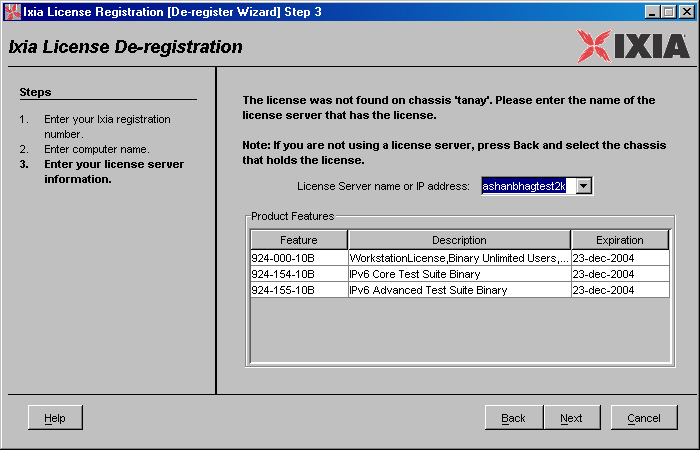
Step 4: Uninstall the License
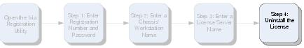
All the necessary information has been entered. A screen similar to the one shown in Figure 3-6 is displayed.
Figure 3-6. De-registration Step 4 – Uninstall License
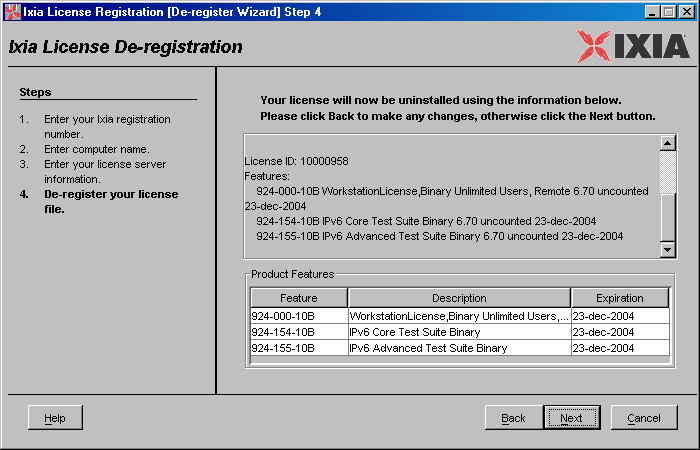
After the license has been de-registered a Receipt similar to the one in Figure 3-7 is displayed. This is a record of the license's de-registration. Save this information as a file or a make a printout.
Figure 3-7. De-registration Step 5 – Receipt
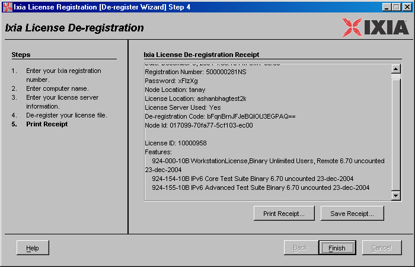
The license is now removed from the chassis or workstation. All product and software privileges pertaining to the license are revoked.
Offline License De-registration – Step by Step
The steps in the offline de-registration process are:
If the de-registration machine is attached to the Internet, follow the instructions in Online License De-registration – Step by Step.
Figure 3-8 will help keep track of the steps in the offline registration process. It is repeated at each step with the current operation highlighted.
Figure 3-8. Offline De-registration
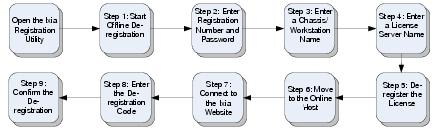
Step 1: Start Offline De-registration
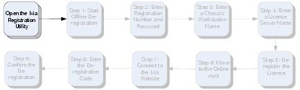
Open the IRU as described in Open the Ixia Registration Utility. The first screen that displayed is shown in Figure 3-9. This message indicates the Installation Host cannot reach the Ixia web-site via the Internet. If the Installation Host is connected, use the following steps to diagnose the problem.
If the Installation Host should be attached to the Internet
- Use a browser to go to any non-Ixia Internet page. If this fails, then there is a problem within the network.
- Use a browser to access Ixia's registration server at http://licensing.ixiacom.com. If this fails, then it might be the case that Ixia's server is down. Contact Ixia at the appropriate support center to confirm.
- If Ixia's registration server's web page is displayed, and the screen shown in Figure 3-9 still appears after restarting the license de-registration process, then either proceed with the steps in this section, or contact Ixia at the appropriate support center for assistance.
To proceed with offline license de-registration
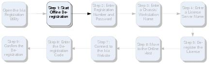
The dialog shown in Figure 3-9 is displayed when the Installation Host is not connected to the internet.
Figure 3-9. Offline De-registration Step 1
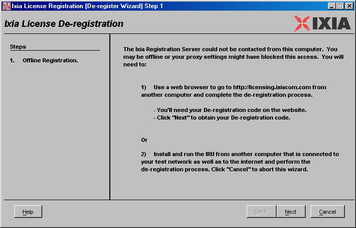
– Offline Notice
- Find an Online Host that is connected to the Internet. It is necessary to transfer small amounts of data between the Online Host and the chassis or workstation where the license is being de-registered (the Installation Host). A removable USB drive will work, or a common e-mail system.
- Press the Next button.
Step 2: Enter Registration Number and Password
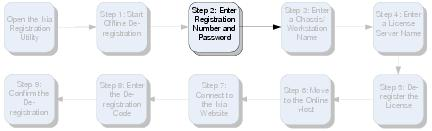
The next screen displayed is shown in Figure 3-10.
Figure 3-10. Offline De-registration Step 2 – Registration Number
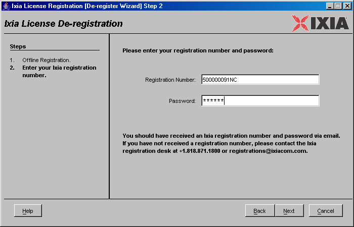
- Enter the Registration Number and Password, as specified in the Ixia generated e-mail. The source and contents of this e-mail are discussed in Introduction and in What is License Management?
- Press the Next button.
Step 3: Enter a Chassis or Workstation Name
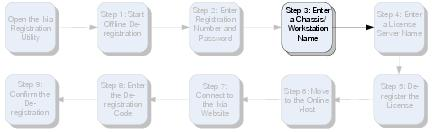
If the license is associated with a different chassis/workstation, then the next screen is shown in Figure 3-11.
Figure 3-11. Offline De-registration Step 3 – Ixia Chassis or Workstation Name
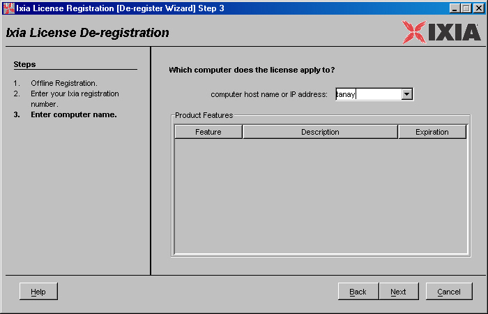
- Enter the host name or IP address of the Ixia chassis or workstation that is associated with the license being de-registered. Localhost is the default and refers to the Installation Host.
- Look at the Product Features box and verify that the features listed correspond to the software or license being de-registered.
- Press the Next button.
Step 4: Enter License Server Name
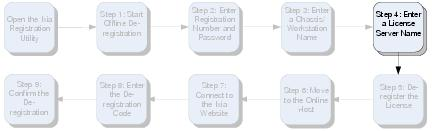
A dialog similar to the one shown in Figure 3-5 is displayed. The screen should only appear if a License Server is used (and the chassis or workstation entered in Step 3: Enter a Chassis or Workstation Name did not contain the license being de-registered).
Figure 3-12. Offline De-registration Step 4 – License Server
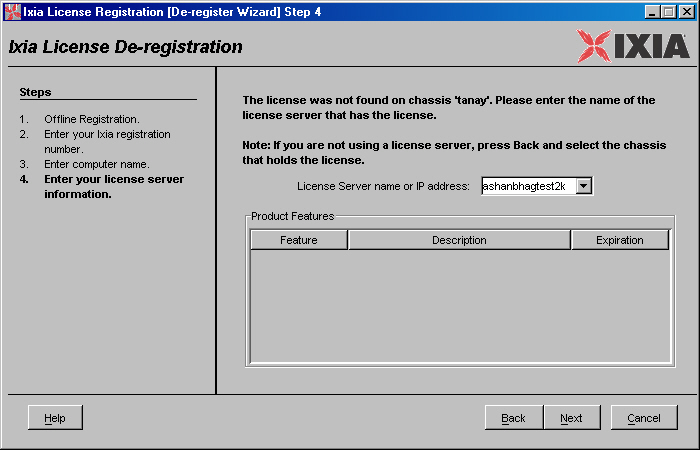
Step 5: De-register the License
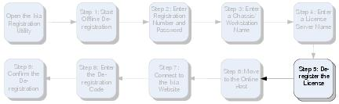
The screen shown in Figure 3-13 is displayed. Review the license information for accuracy.
Figure 3-13. Offline De-registration Step 5 – De-register
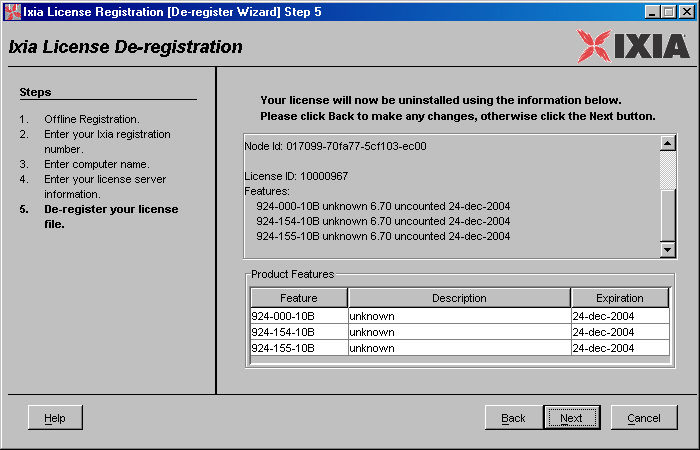
Step 6: Move to the Online Host
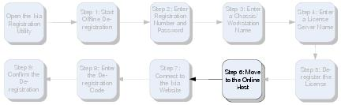
At this point, a screen similar to that shown in Figure 3-14 is displayed.
Figure 3-14. Offline De-registration Step 6 – Move to Online Host
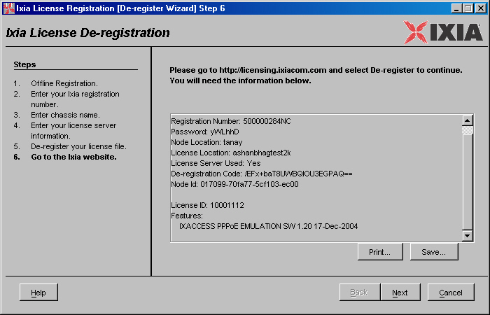
- The information on the screen is necessary to complete the de-registration on the Online Host. Either:
- Move to the Online Host, start a browser and enter http://licensing.ixiacom.com.
- Follow the instructions in:
- Do not press the Next button in this dialog yet.
Step 7: Online – Connect to the Ixia Registration Website
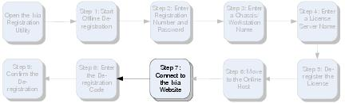
Enter the address for the Ixia registration website. Figure 3-15 is displayed.
Figure 3-15. Offline De-registration Step 7 – Ixia Registration Website
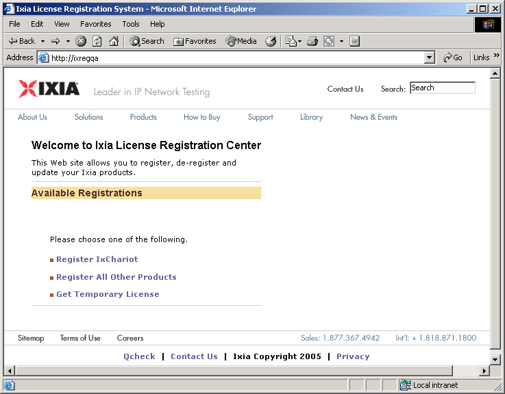
- Select the appropriate Ixia product. A web page similar to the one in Figure 3-16 is displayed.
Figure 3-16. Offline De-registration Step 7 – Select Action
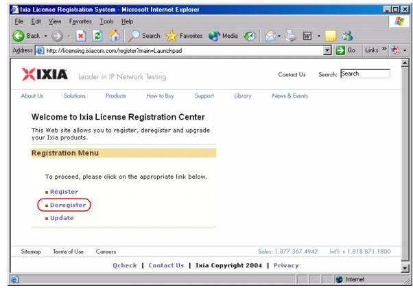
- Select the De-register option.
Step 8: Online – Enter the De-registration Code
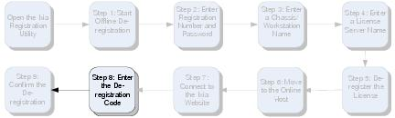
After selecting the de-register options, a webpage similar to the one in Figure 3-17 is displayed.
Figure 3-17. Offline De-registration Step 8 – De-registration Code
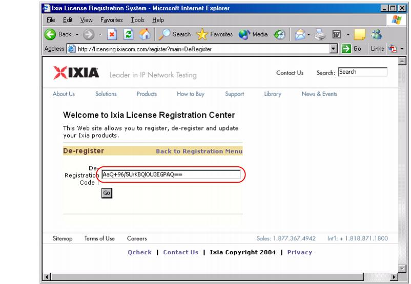
- Enter the De-registration Code exactly as shown in Figure 3-14 (it is displayed directly above the Node ID). In the example above, the code is AaQ+96/5UrKBQ|OU3EGPAQ==.
- Press the Go button.
Step 9: Online – Confirm the De-registration
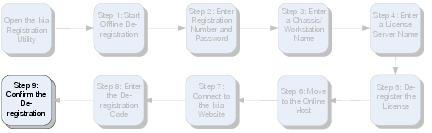
The screen shown in Figure 3-18 displays information about the license.
Figure 3-18. Offline De-registration Step 9 – Enter Node ID
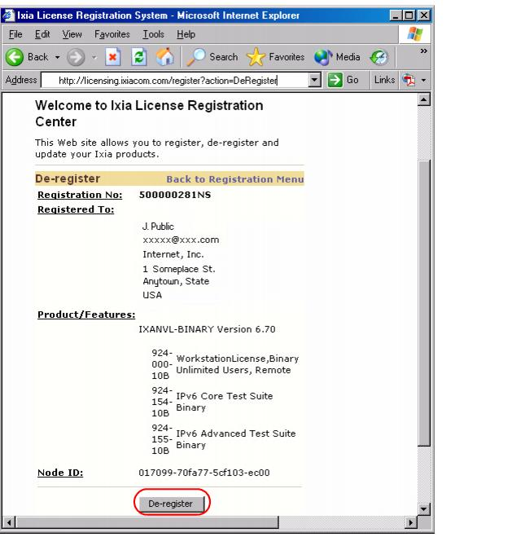
Return to the Installation Host.
Press the Next button. After the license has been de-registered, a Receipt is shown, for example as in Figure 3-19. This is a record of the license's de-registration. Save this information as a file or make a printout.
Figure 3-19. Offline De-registration Step 10 – Print Receipt
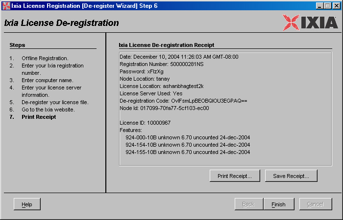
|
|
Did this document answer your question?
If not, let us know! |
|